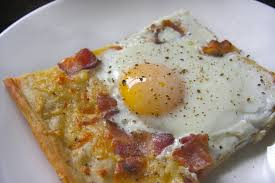

Sheet Pan Breakfast Pizza

Description
Pop open crescent roll dough and whisk together eggs for a low-effort cheesy breakfast pizza topped with hash browns and Canadian-style bacon.
Ingrediants
- Cooking spray
- 2 (8-ounce) packages refrigerated crescent dough sheets or refrigerated crescent rolls
- 12 ounces sliced Canadian-style bacon, quartered
- 1 1/2 cups frozen cubed hash brown potatoes, thawed
- 2 cups shredded Cheddar cheese, divided
- 12 large eggs
- 1/3 cup milk
- 1/2 teaspoon table salt
- 1/8 teaspoon freshly ground black pepper, plus more for garnish
- chopped fresh chives and/or green onion, for garnish
- flaky salt, for garnish
- hot sauce, for serving
Directions
- Preheat the oven to 375 degrees F (190 degrees C). Coat a 11x17-inch rimmed sheet pan with cooking spray.
- Place crescent dough sheets on the prepared sheet pan. Press seams together to seal, stretching slightly if needed to fit the pan.
(If using crescent roll dough, press seams of triangles together.) Pinch dough so it comes up the sides of the pan.
- Evenly sprinkle Canadian bacon over the dough. Spread hash browns over Canadian bacon and sprinkle with 1 1/2 cups cheese.
- Whisk together eggs, milk, table salt, and pepper in a bowl until smooth. Pour evenly over mixture in the sheet pan. Sprinkle with remaining 1/2 cup Cheddar cheese.
- Bake until eggs are set and crust is lightly browned, 30 to 35 minutes. Garnish with chives, green onion, flaky salt, and/or additional pepper. Serve with hot sauce.
Home